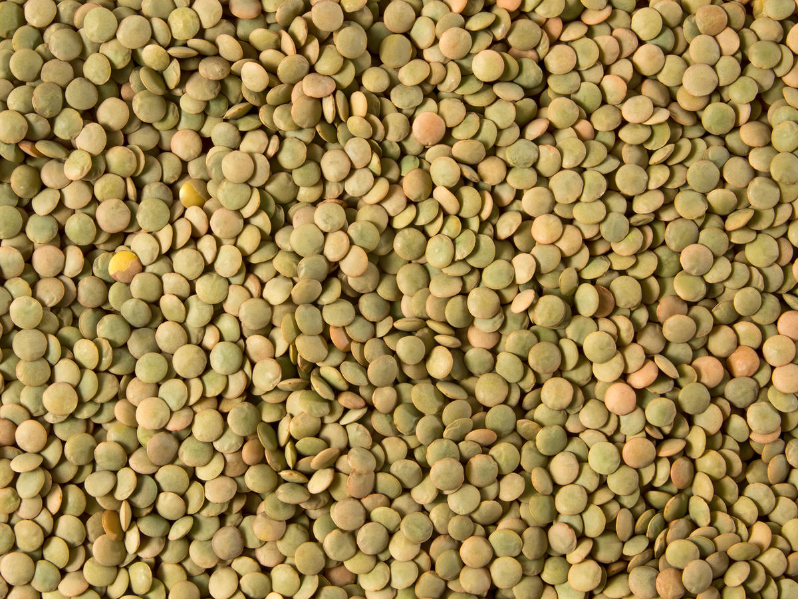

Lentil Soup

This hearty lentil soup with potatoes kept me going
throughout my senior year at Texas State.
Ingredients
- lentils
- potatoes
- tomatoes
- vegetable broth
- salt
directions
- pour lentils in crockpot
- dice up potatoes
- throw potatoes in crockpot
- pour diced tomatoes on top
- pour half gallon of water in and let lentils soak for about an hour
- pour vegetable broth over everything and turn crockpot on low
- let cook for 7-8 hours
- serve and sprinkle salt on top for taste